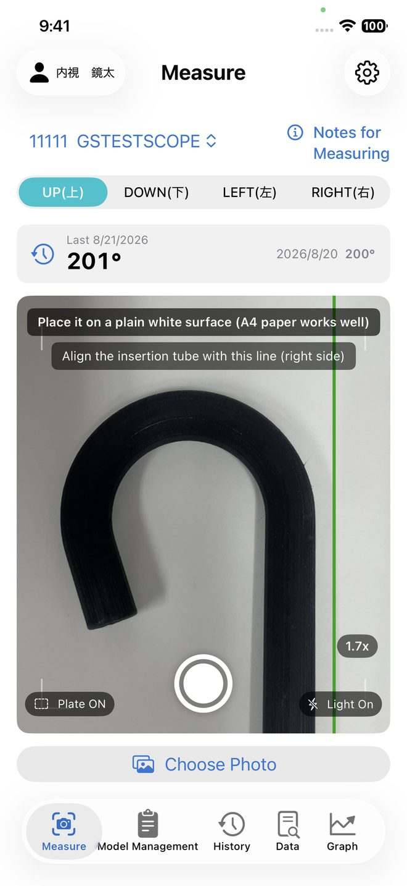

iOS App
Photograph the bending section of an endoscope with your iPhone. EndoScopeAngleChecker measures the angle automatically and keeps it as an inspection record.

Videos, a full manual in your language, and answers to common questions.
Note about the videos: the on-screen captions are in Japanese. There is no narration — only sound effects — so the steps are still easy to follow. The written manual is available in English.
Please write to us about bugs, questions or requests. We normally reply within two to three days. Email in English is welcome.
souyou works
Sending your report from Settings → Report a Problem inside the app attaches the activity log and the photo you measured, which helps us find the cause much faster.
No. This app is not a medical device and not diagnostic software. Treat the reading as a reference value. Interpreting the result, and deciding whether an endoscope stays in service, remain your own responsibility. We recommend using the app alongside an angulation measuring plate.
Only on your device. We run no server and never receive your records or photos. See the privacy policy for details.
Export a file from Settings → “Transfer Data”, then load it on the new device. Photos come across too, and you can send the file directly by AirDrop. If you restored the new iPhone from a full backup, you do not need to do this at all.
Place the endoscope on a plain white background, light it evenly, and shoot straight on with the insertion tube running along the guideline on screen. The guideline turns green as the tilt gets smaller. If it still looks wrong, report it from that result screen — the photo you took is sent with the report.
No. However many times you shoot the same endoscope in the same direction on the same day, only the most recent one is kept. Feel free to shoot again whenever a photo does not come out well.
The app and the manual are both available in English, Japanese and Simplified Chinese.
This app is not a medical device or diagnostic software, including under Japan's Pharmaceutical and Medical Device Act. It is a tool for inspecting the instrument itself, and it performs no measurement, diagnosis or treatment relating to any patient.
Lighting, and the distance and angle of the camera, can introduce error into the reading.